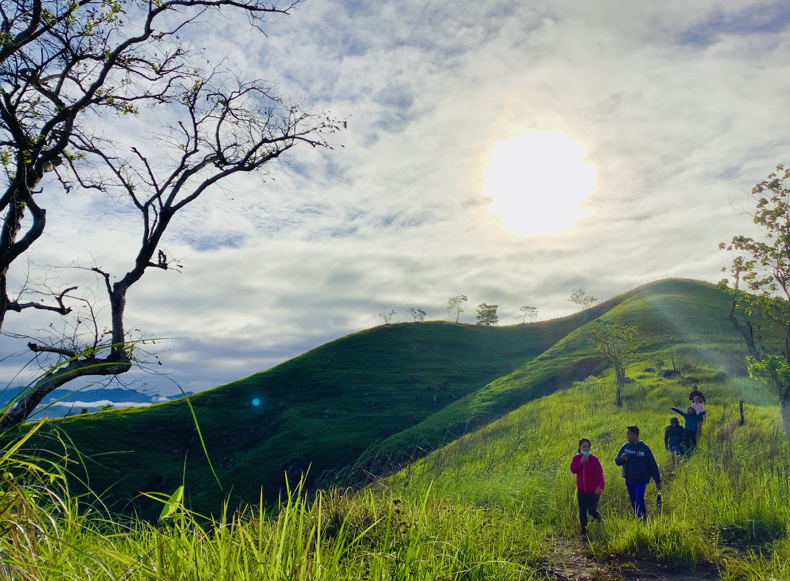
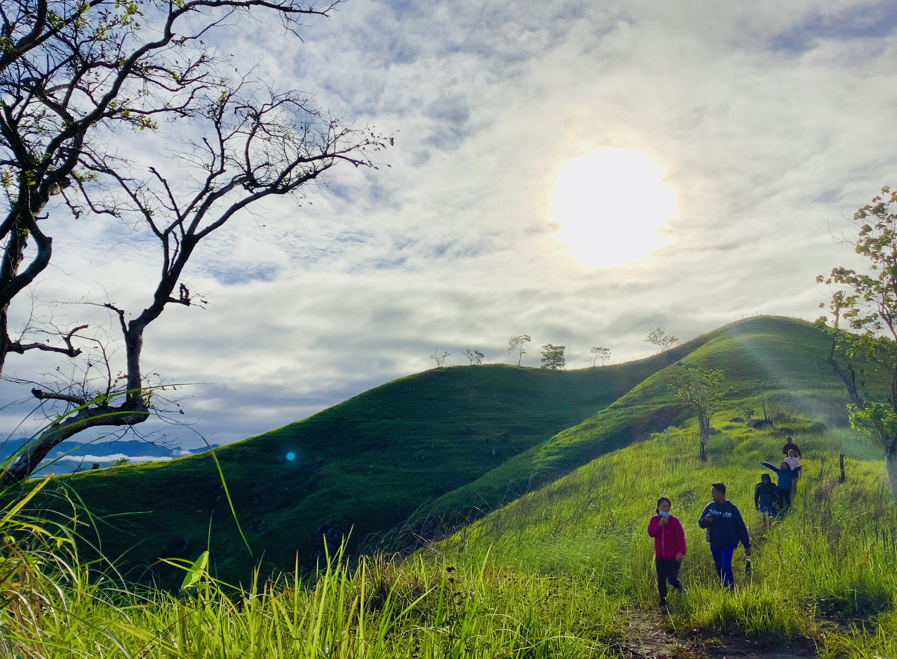
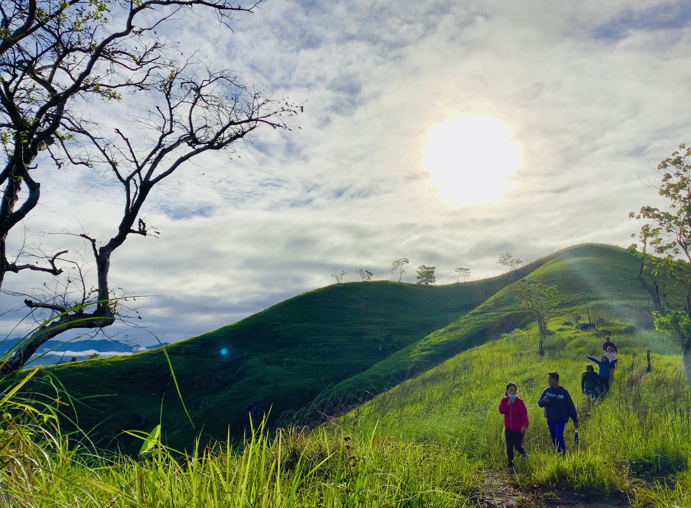
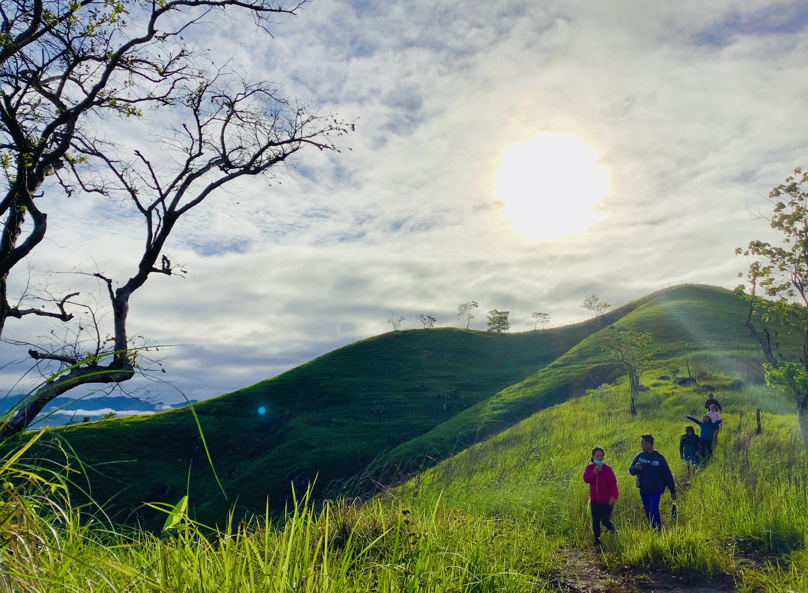

Sitio de Victoria is a hidden gem in Dupax del Sur, known for its breathtaking rolling hills that stretch wide. Blanketed with lush greenery, the hills create a serene and picturesque landscape perfect for sightseeing, photography, and quiet moments with nature. During sunrise and sunset, the view transforms into a stunning canvas of golden light and soft shadows, offering visitors a peaceful escape and a chance to appreciate the unspoiled beauty of the countryside.